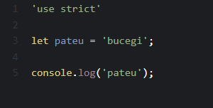
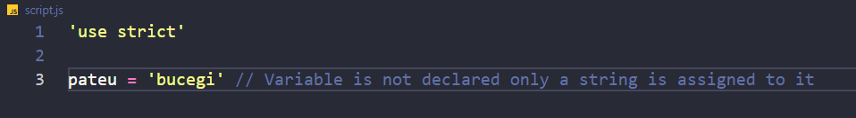
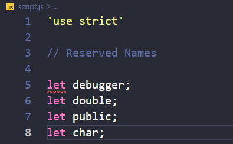
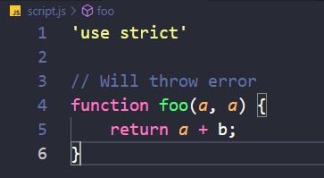
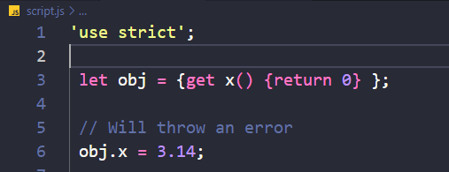

Strict mode was introduced in ES5 and allows us to place our JS code into a "strict" operating context.
Benefits of 'strict mode'
Strict mode eliminates some JavaScript silent errors by changing them to throw errors.
Strict mode fixes mistakes that make it difficult for JavaScript engines to perform optimizations: strict mode code can
sometimes be made to run faster than identical code that’s not strict mode.
It prevents, or throws errors, when relatively “unsafe” actions are taken (such as gaining access to the global object).
Strict mode prohibits us from using variables that are reserved for JavaScript. Examples : 'debugger', 'double', 'public',
'char', 'arguments' etc
How to enable strict mode
The way to enable it is by adding 'use strict' at the top of our JS code
~

Examples
`
No more silent errors!

Reserved names

Duplicating parameters in functions are not allowed

Getters cannot be changed

More examples and documentation can be found
here.
Possible drawbacks after implementation in current projects
We might run into some issues from examples that we mentioned above and have to correct them.
Testing might take some time after implementation.